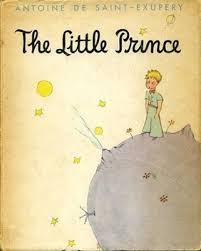

<!DOCTYPE html>
<style>
    figcaption{
        margin-right: 315px;
        margin-left: 410px;
        word-spacing: 1.5px;
        letter-spacing: 0.5px;
        line-height: 17px;
    }
    .org-bg{
        background-color: orange;
        color: black;
    }
    .quotes{
        color: red;
        font-weight: bold;
    }
    .underline{
        text-decoration: underline;
        color: black;
    }
    .prince{
        max-width: 100%;
        margin-right:315px;
        margin-left: 410px;
        height: auto;
        width: 375px;
    }
</style>
<hmtl>
    <figure>
        
        <figcaption> As the little prince dropped off to sleep. I took him in my arms and set out walking
            once more. <span class="underline">I felt deeply moved, and stirred. It seemed to me that I was carrying a very fragile treasure.</span> <span class="org-bg">It seemed to me, even, that there 
            was nothing more fragile on all Earth. </span>In the moonlight I looked at his pale forehead, his closed eyes, his locks of hair that trembled in the wind, and I said to myself: <span class="quotes">"What I see here is nothing but a shell. What is most important is invisible..."</span>
            As his lips opened slightly with the suspicion of a half-smile, I said to myself, again: <span class="quotes">"What moves me so deeply, about this little prince who is sleeping here, is his loyalty
            to a flower-- the image of a rose that shines through his whole being like the flame of a lamp, even when he is asleep. . ."</span> And I felt him to be more fragile still. <span class="underline">I felt the need of protecting him, as if he himself were a flame that might be extinguished by a little puff of wind. . .</span>
        </figcaption>
    </figure>
    <a href="index.html">Click here for Index page!</a>
</hmtl>